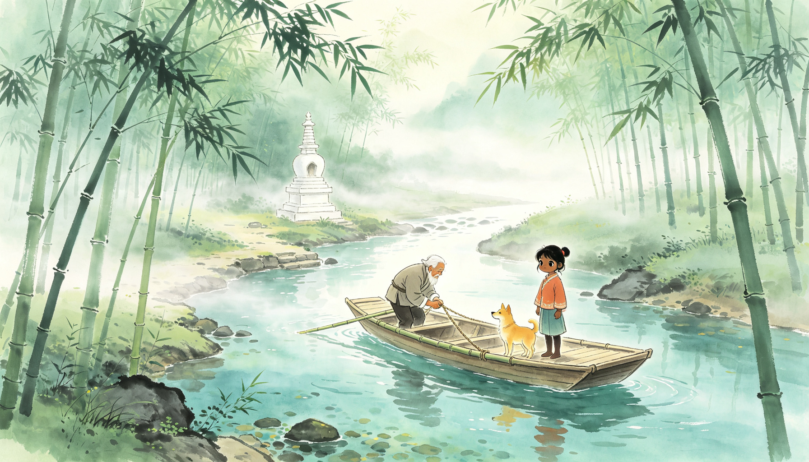
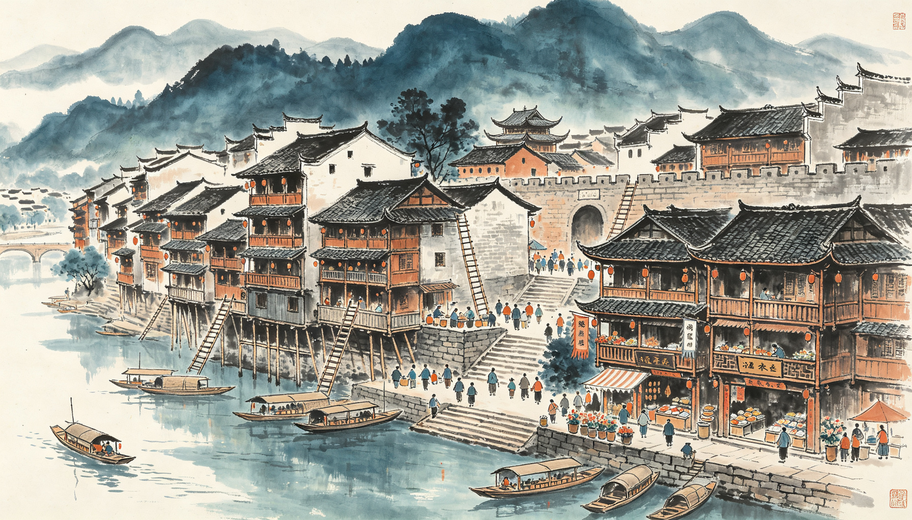
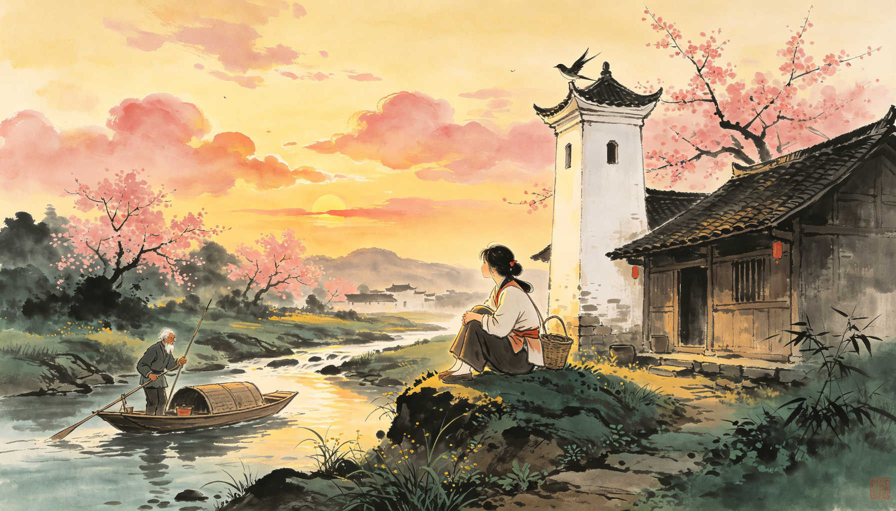
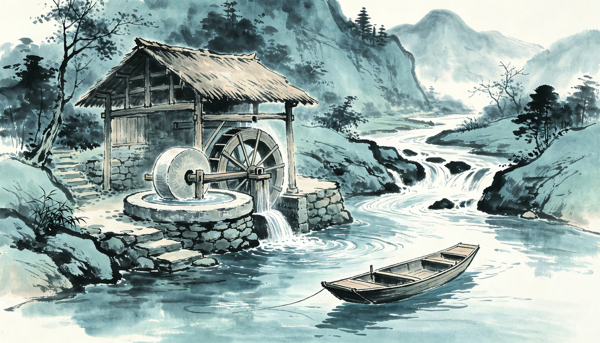
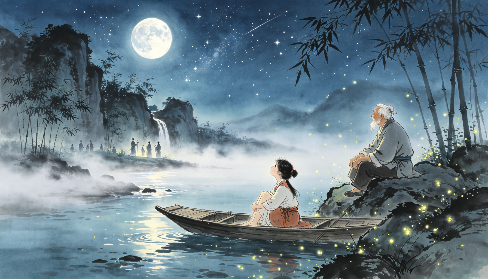
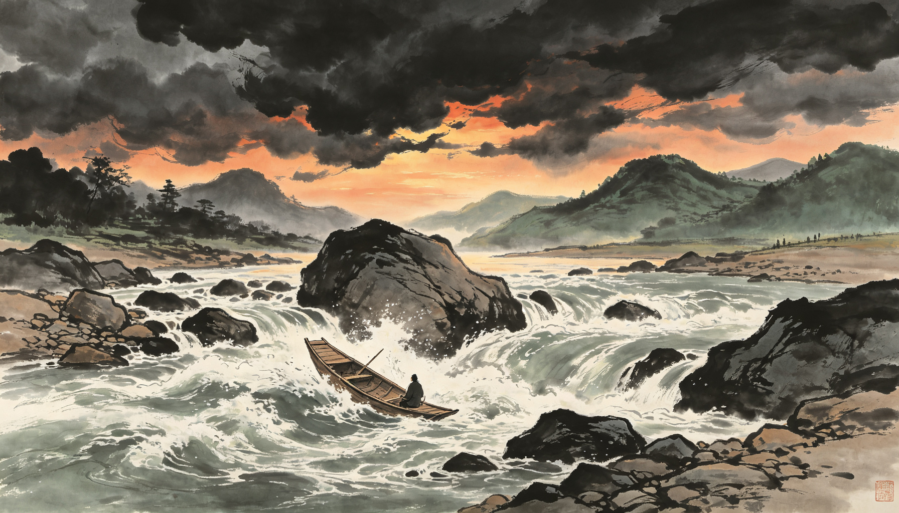
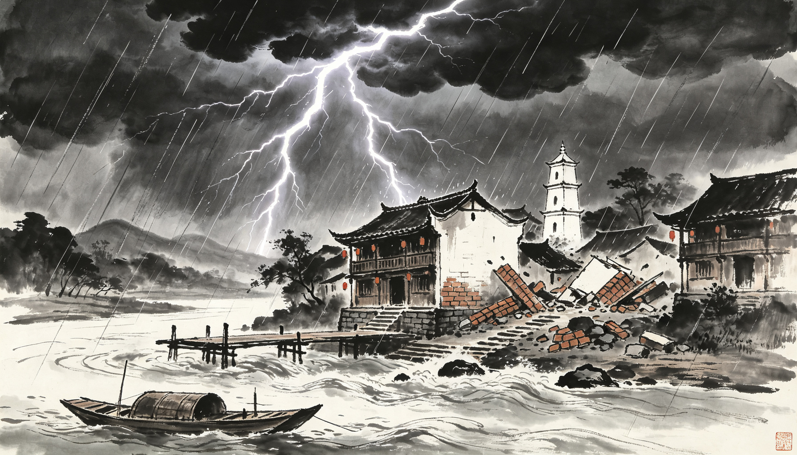
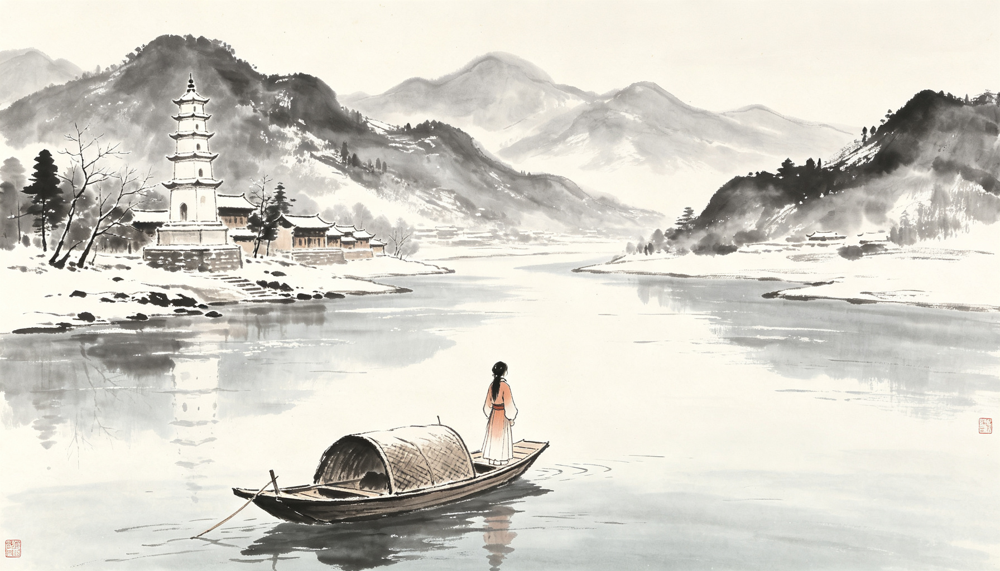

序 章
走近边城
这是沈从文笔下最温柔的地方。一条溪，一座白塔，一个老人，一个女孩，一只黄狗。故事很慢，慢得像湘西的溪水，可读完之后，你会记住一辈子。
"
由四川过湖南去，靠东有一条官路。这官路将近湘西边境，到了一个地方名叫"茶峒"的小山城时，有一小溪，溪边有座白色小塔，塔下住了一户单独的人家。这人家只一个老人，一个女孩子，一只黄狗。
沈从文《边城》第一章
🎙️
开篇 · 朗读
溪流如弓背，山路如弓弦——听老人讲故事的调子
实景今天的湘西茶峒——沈从文笔下"边城"的原型地，一脚踏三省
📖 关于这本书：沈从文（1902—1988）1934 年写成《边城》。小说没有大起大落的情节，写的只是茶峒渡口一年半载的日子：端午、中秋、过年，唱歌、划船、捉鸭。可正是这些平凡的日子，藏着中国文学里最深沉的等待与最干净的遗憾。它被翻译成四十多种文字，是"中国乡土文学的巅峰"。
第一幕
渡口与白塔
一个人，一只狗，一只船。日子像溪水一样流。老人把船渡了五十年，唯一的亲人，是那个在风日里长大的女孩子——翠翠。
"
溪流如弓背，山路如弓弦……管理这渡船的，就是住在塔下的那个老人。活了七十年，从二十岁起便守在这小溪边，五十年来不知把船来去渡了若干人。他唯一的伙伴是一只渡船和一只黄狗，唯一的亲人，便只那个女孩子。
沈从文《边城》第一章

插画清晨薄雾，老人牵拉竹缆，渡船缓缓划过清可见底的小溪
"
翠翠在风日里长养着，把皮肤变得黑黑的，触目为青山绿水，一对眸子清明如水晶。
沈从文《边城》第一章
实景沱江边的白塔——让人想起《边城》里塔下住着的那户人家
互动拉拉渡
老船夫每天做的，就是拽着缆绳，把船从这岸拉到那岸。你也来当一回摆渡人——连点"拉缆"，把翠翠和爷爷送到对岸。
已拉缆 0 次
点击拉缆，把船拉过溪去。
🎯 闯关 · 第一幕
Q1. 塔下住着几个人？
Q2. 翠翠的母亲是怎么死的？
第二幕
河街与吊脚楼
顺水再走一里，就是茶峒城。凭水依山筑成的城，沿河一条街，房子一半着陆、一半在水——那便是吊脚楼。河街上有船总顺顺，和两个儿子：天保、傩送。
"
贯串各个码头有一条河街，人家房子多一半着陆，一半在水，因为余地有限，那些房子莫不设有吊脚楼。
沈从文《边城》第二章

插画人家房子多一半着陆，一半在水，因为余地有限，那些房子莫不设有吊脚楼
实景湘西吊脚楼——"细脚伶仃"地立在江里
🧭 风物速记：船总顺顺，是茶峒最有威望的人，仗义疏财。大老天保，像他爹，憨直沉稳；二老傩送，却像妈——茶峒人叫他"岳云"，因为他眉清目秀，像戏台上唱《岳云》的小生。
互动河街寻宝
茶峒的河街什么都有。把这 6 样风物都认出来，你就成了半个茶峒人。
找到 0 / 6
点一点河街上的风物，听听它们的来历。
🎯 闯关 · 第二幕
Q3. 茶峒的房子为什么多设吊脚楼？
Q4. 顺顺的两个儿子，大老叫什么？
第三幕
端午 · 初见
端午节，茶峒人最热闹的日子。龙船下水，锣鼓喧天；水手们光着膀子捉鸭子。也就在这个端午，翠翠第一次见到二老傩送——那句"大鱼来咬了你"，从此钻进她梦里。
"
桨手每人持一支短桨，随了鼓声缓促为节拍，把船向前划去。……每当两船竞赛到剧烈时，鼓声如雷鸣，加上两岸人呐喊助威。
沈从文《边城》第三章
插画龙舟竞渡——端午是茶峒一年里最响亮的日子
"
"大鱼来咬了你，可不要叫喊救命！"——那晚翠翠等爷爷，等来的是二老。一句玩笑话，她记了一辈子。
沈从文《边城》第四章
实景黄昏的渡口，船靠岸，灯初上——像翠翠守船等爷爷的那个晚上
互动捉鸭子
端午的保留节目：船总把鸭子放进河里，水手们下水去捉。30 秒内，点中 3 只鸭子就算捉鸭高手！
得分 0 · 时间 30
鸭子会从水面钻出来，快点它！
🎯 闯关 · 第三幕
Q5. 翠翠初次见到二老时，他说的那句玩笑话是？
Q6. 端午捉鸭子，是茶峒的什么习俗？
第四幕
少女心事
翠翠十五岁了。从前听歌就听歌，看龙船就看龙船；如今黄昏里会有一点薄薄的凄凉，心里会无缘无故地柔软起来。祖父看在眼里，心里却想起了翠翠她娘。
"
黄昏照样的温柔、美丽和平静。但一个人若体念或追究到这个当前一切时，也就照样的在这黄昏中会有点儿薄薄的凄凉。
沈从文《边城》第十三章

插画黄昏的白塔下，翠翠看天上被夕阳烘成桃花色的薄云
实景雾气氤氲的江面——少女的心事，也像这雾一样朦胧
互动心事卡牌
翠翠把心事藏得很深。翻开心事卡，听一听这个十五岁少女心里的话。
翻开 0 / 6
每张牌后面，都是一句翠翠没说出口的话。
🎯 闯关 · 第四幕
Q7. 先来提亲的是谁？
Q8. 黄昏里的翠翠，心里是什么感觉？
第五幕
车路与马路
湘西求亲有两条路：走车路，是请媒人正经提亲；走马路，是当夜到对岸唱三年六个月的情歌。大老走车路，二老走马路——月夜两兄弟同去唱歌，弟弟先开口。祖父犯难了——翠翠的心，到底在哪边？
"
"车是车路，马是马路，各有规矩！想爸爸作主，请媒人正正经经来说是车路；要自己作主，站到对溪高崖竹林里为你唱三年六个月的歌是马路。"
沈从文《边城》第十一章

插画中寨人用碾坊作陪嫁妆奁，诱惑傩送二老——二老的意思，还在那只渡船。
"
"假若我不想得到这座碾坊，却打量要那只渡船，而且这念头也是两年前的事，你信不信呢？"
沈从文《边城》第十二章
 实景晨雾里的渡船——碾坊是实的，渡船是飘的；二老偏偏选了个"飘"的
实景晨雾里的渡船——碾坊是实的，渡船是飘的；二老偏偏选了个"飘"的
互动车路 or 马路
如果你是二老，面对翠翠，你走哪条路？选完看看书里怎么走。
两条路，都是湘西人求爱的方式。你选哪一条？
🎯 闯关 · 第五幕
Q9. "车路"指的是什么？
Q10. 中寨人要给二老陪嫁一座什么？二老怎么说？
第六幕
月下情歌
那一夜，月光如银子，无处不可照及。歌声从对岸高崖上飘下来，软软、甜甜。翠翠在梦里，灵魂被歌声轻轻托起，还摘了一大把虎耳草。
"
翠翠梦中灵魂为一种美妙歌声浮起来了，仿佛轻轻地各处飘着，上了白塔，下了菜园，到了船上，又复飞窜过对山悬崖半腰——去作什么呢？摘虎耳草！
沈从文《边城》第十四章

插画月光如银子，歌声浮起少女的梦——中国文学里最美的情歌场面之一
实景夜里的沱江灯火摇曳——像歌声停过的地方
互动听歌 · 摘虎耳草
戴上耳机，听二老的山歌——歌声飘起来时，等它到最甜处再摘，替翠翠摘回 5 把虎耳草。
已摘 0 / 5
跟着月光与歌声的节奏，点击摘草。
🎯 闯关 · 第六幕
Q11. 翠翠在梦里，被歌声托起来去做什么？
Q12. 那晚在月下唱歌的，其实是？
第七幕
天意 · 离殇
两兄弟约定月夜同去唱歌，哥哥让弟弟先开口；弟弟一开口，哥哥自知不是敌手。大老决意离开茶峒。谁知在茨滩，船翻了，人再没回来。茶峒人说：这是天意。可天意之后，二老的心也关了门。
"
你听我说：天保大老坐下水船到茨滩出了事，闪不知这个人掉到滩下漩水里就淹坏了。
沈从文《边城》第十六章

插画茨滩的急流乱石——天保的生命，就断在这里
"
二老既记忆着哥哥的死亡，且因得不到翠翠理会，又被逼着接受那座碾坊，意思还在渡船，因此赌气下行。
沈从文《边城》第二十一章
互动天意骰子
茶峒人把说不清的变故都叫"天意"。掷三次骰子，拼出你的"天意三行诗"。
🎲
点击骰子，看看天意怎么说。
三次天意，拼成一句命运的诗。
🎯 闯关 · 第七幕
Q13. 大老天保是怎么死的？
Q14. 哥哥死后，二老做了什么？
第八幕
永远的等待
雷雨夜，溪水漫上码头，白塔在风雨里坍了。祖父也在这个夜里，永远闭上了眼睛。翠翠哭了，可她还是守着渡船——因为有人说，二老也许明天回来。
"
夜间果然落了大雨，夹以吓人的雷声。电光从屋脊上掠过时，接着就是訇的一个炸雷……溪中也涨了大水，已漫过了码头。
沈从文《边城》第二十章

插画雷雨夜，白塔倾圮，渡船被水冲走——仿佛天地也在为一辈子摆渡的老人送行
"
到了冬天，那个圮坍了的白塔，又重新修好了。那个在月下唱歌，使翠翠在睡梦里为歌声把灵魂轻轻浮起的年轻人，还不曾回到茶峒来。这个人也许永远不回来了，也许明天回来！
沈从文《边城》第二十一章 · 全书结尾
🎙️
结尾 · 朗读
"这个人也许永远不回来了，也许明天回来！"

插画冬天，白塔重修好了。翠翠守着渡船，望着远方——等待一个"也许明天回来"的人
互动等待之问
故事到这里就结束了。没有答案，只有等待。你觉得，二老还会回来吗？
沈从文把答案留给了每一个读者。你相信哪一个？
🎯 闯关 · 第八幕
Q15. 雷雨夜里，谁去世了？
Q16. 全书结尾，白塔怎么样了？
终 章
金句墙
把《边城》最戳人心的话，都留在这一面墙上。左右滑动，慢慢读。
"这个人也许永远不回来了，也许明天回来！"
《边城》· 结尾"火是各处可烧的，水是各处可流的，日月是各处可照的，爱情是各处可到的。"
《边城》· 第十二章"每一只船总要有个码头，每一只雀儿得有个窠。"
《边城》· 第十一章"要硬扎一点，结实一点，才配活到这块土地上！"
《边城》· 第十三章"不许哭，做一个大人，不管有什么事都不许哭。"
《边城》· 第十三章"日头不辜负你们，你们也莫辜负日头！"
《边城》· 祖父"月光如银子，无处不可照及。"
《边城》· 第十三章"翠翠在风日里长养着，把皮肤变得黑黑的，触目为青山绿水，一对眸子清明如水晶。"
《边城》· 第一章
终 局
大考 · 边城知多少
四道终局题。全对，你就是真正的"边城读者"。
🎯 终局闯关
Q17. 全书最后一句话是？
Q18. 《边城》的作者是？
Q19. 翠翠守着渡船，一直在等谁？
Q20. "边城"茶峒，大致在什么位置？
📊 你的闯关战绩：0 / 20。答对 16 题以上，解锁「边城读者」称号。
船到岸了
故事没有结局，就像茶峒的溪水还在流。但你已经陪翠翠走完了一个夏天、一个秋天和一个冬天。
愿你我都能等到，那个"也许明天回来"的人。